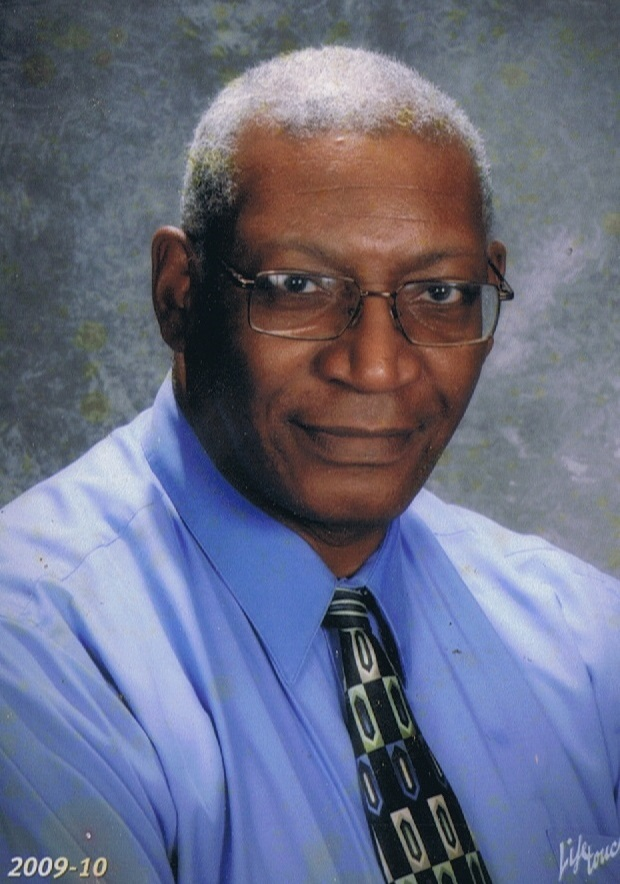

The Team
Visual Novel: Sins and Misdeeds - The Team
Experience Studios' Visual Novel: Sins and Misdeeds - The Team
This is the team responsible for this project:
Team Member - Justin Williams

Justin Williams
Justin Williams
Education
Bachelor of Science 2016 - Strayer University, Augusta, Georgia
Information Systems with concentration in Programming
Currently enrolled at University of Advancing Technology in the Master's Degree program for Game Production.
Skills & Abilities
Communication
- Proficient with Microsoft Office, Internet, and Social Media
Leadership
- Active in church amd member of the Live River Missionary Baptist Church Male Chorus
Achievements
- Honor Roll Certificaate - Strayer University: Fakk 2013, Spring 2014, Summer 2014, Winter 2014, Spring 2015, Fall 2015, Winter 2015, Spring 2016, Winter 2016
- Delta Alpha Pi International Honor Society - Strayer Gamma Zeta Chapter, April 2016
- Alpha Sigma Lambda – Iota Eta Chapter at Strayer University, November 2015
- National Society of Collegiate Scholars – Strayer University, April 2014
- National Society of Collegiate Scholars – Strayer University, April 2014
- Graduated with honors - Strayer University
Team Member - Willie Williams

Willie Williams
Willie Williams
Education
Bachelor of Science 1970 - Paine College, Augusta, Georgia
Natural Science with concentration in Mathematics
M. Ed. 1977 -University of South Carolina, Columbia, South Carolina
Secondary Education - Mathematics
Rank of Green Belt 6th Gup 2002
Martial Art Academy Sport Taekwondo Center, Aiken, South Carolina
Skills & Abilities
Communication
- Proficient with Microsoft Office, Internet, and Social Media
- Computer literate in html, c++, asp.net, javascript, php, COBAL, Java, and Phyton.
Leadership
- Active in church amd member of the Live River Missionary Baptist Church Male Chorus
Achievements
- Public school teacher for over thirty years, Adult Education instructor for nine years, Adjunct college instructor for three years. Retired.